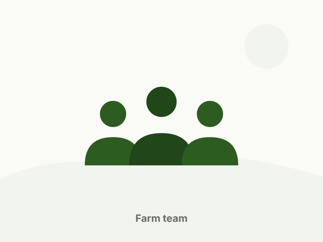

Mission
Make good farming practical
Give farmers reliable access to healthy livestock, balanced feed and clear seasonal guidance — without overpromising.
About us
Yagya Krishi Udhyog (यज्ञ कृषि उद्योग) works across livestock, animal feed and seasonal crops — with patience, planning and honest communication.

Our story
Agriculture in Nepal asks for consistency: animals fed every day, feed available when needed, and crops planted in the right window. Our work exists to make that consistency easier for farmers and households.
We began by focusing on livestock raising, and over time added animal feed supply and seasonal crop planning so that the people we work with can source more of what they need from one place.
What guides us
Mission
Give farmers reliable access to healthy livestock, balanced feed and clear seasonal guidance — without overpromising.
Vision
Be the name farmers think of first when they plan livestock, feed or the next season's crop.
Values
Real availability, real prices when asked, and a clear answer when something is not ready yet.
What we offer
Pigs, goats, cattle, buffaloes and poultry, with housing, feeding and health routines planned for each.
Feed rations for different species and growth stages, supplied as a dealer of established brands.
Vegetables, grains and legumes matched to the season, with planting and harvest windows.
Our approach
Every farm is different, so we start with questions: what animal, how many, what feed history, what land and what season. The answer shapes a plan that fits rather than a fixed package.
When we do not know something or cannot supply it yet, we say so. Trust built over seasons is worth more than any single sale.
Our promise
Get in touch
Send your requirement — animal type, feed or crop, quantity and location — and we will get back to you.